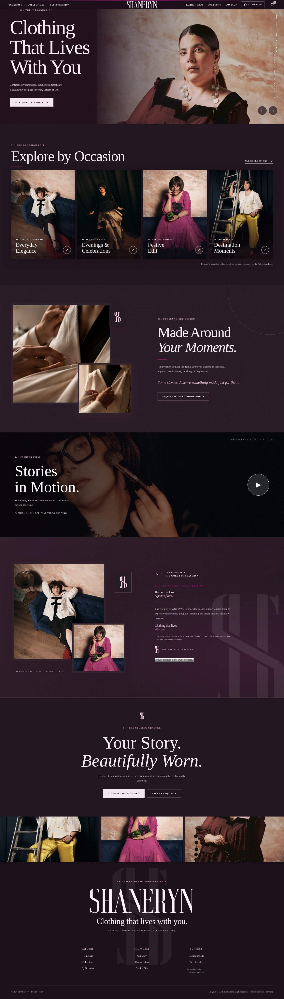

01
Option B / Recommended
Midnight Gallery
A cooler, near-black editorial atmosphere, designed to keep the fashion photography the centre of attention.
A darker expression of SHANERYN. Quiet editorial spaces, soft ivory typography, and the original campaign imagery. Explore two moods, each with a switch back to the approved light palette.
A cooler, near-black editorial atmosphere, designed to keep the fashion photography the centre of attention.

02A warmer aubergine and muted berry interpretation, retaining the same architecture and photography.
Both sites default to Inverse (Dark) mode, unless you have previously selected Original (Light). Use the half-circle colour button in the top navigation to return to the original light design. Your choice is remembered when you move between Homepage and Collections. These remain interactive design prototypes; product catalogue and enquiry backend are not yet production-connected.